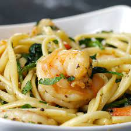

One Pot Lemon Garlic Shrimp Pasta Recipe

One Pot Lemon Garlic Shrimp Pasta Recipe
This easy 30-minute pasta recipe transforms ingredients that you already have in your kitchen into a posh, seafood dish you'll wnat to servce at your next dinner party. And since the whole dish is made in a single pot, clean-up is easy. Don't be suprised if this becomes your favorite quick go-to. ENJOY!
Ingredients
- 8 oz linguine
- 2 tablespoons olive oil
- 8 tablespoons unsalted butter
- 4 cloves garlic, minced
- 1 teaspoon red pepper flakes
- 1 1/4 lb large shrimp
- salt, to taste
- pepper, to taste
- 1 teaspoon dried oregano
- 4 cups baby spinach
- 1/4 cup parmesan cheese, grated
- 2 tablespoons fresh parsley, chopped
- 1 tablespoon lemon juice
Instructions
- In a large pot, boil water and add pasta. Cook (striring frequently) until al dente.
- Drain and set pasta aside.
- In the same pan, heat olive oil and 2 tablespoons of butter. Add garlic and crushed red pepper, cook until fragrant.
- Toss in shrimp, salt and pepper to taste, and stir until shrimp start to turn pink, but are not fully cooked.
- Add oregano and spinach, cook until wilted.
- Return cooked pasta to the pot, add remaining butter, parmesan, and parsley. Stir until well mixed and the butter is melted.
- When the shrimp are cooked, add lemon juice, mix once more, then service while hot.